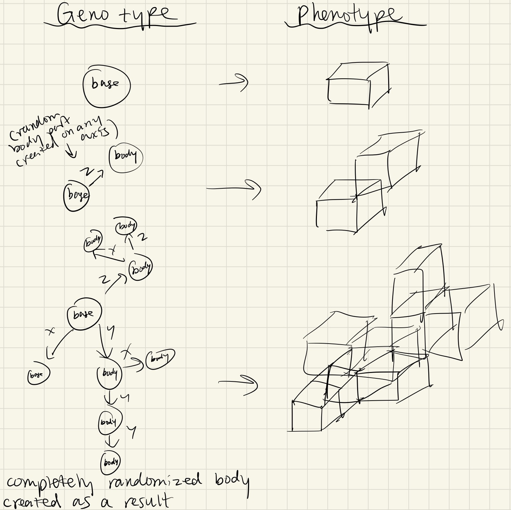
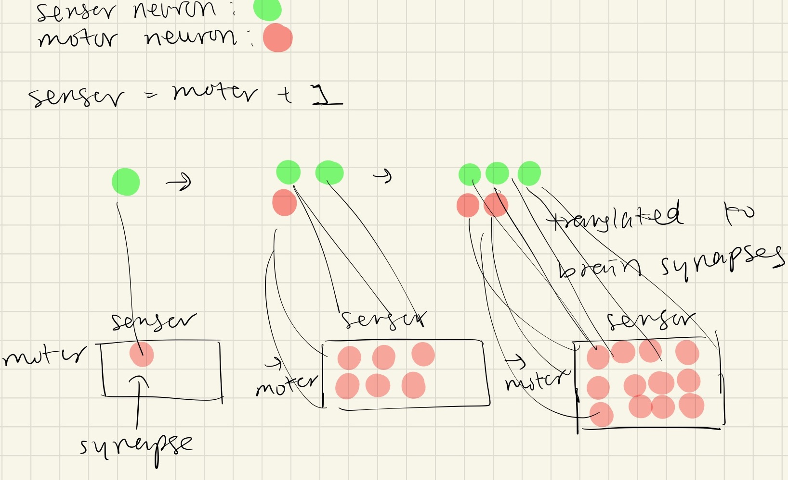
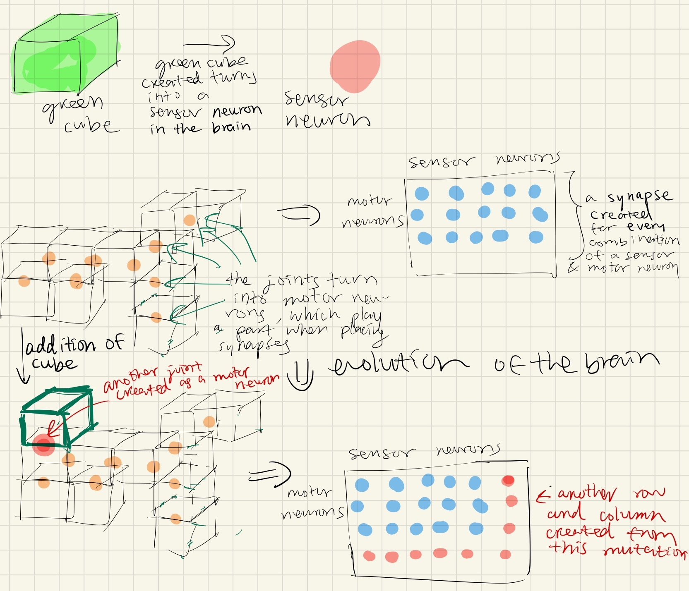
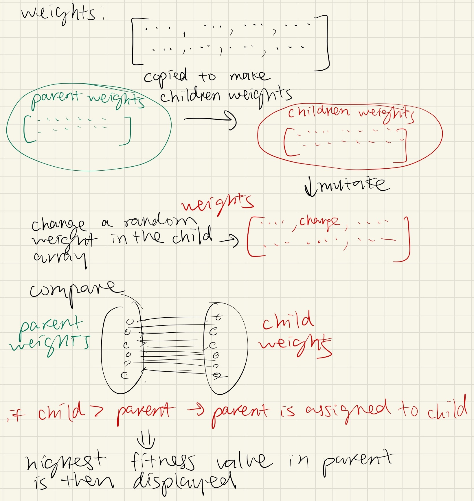
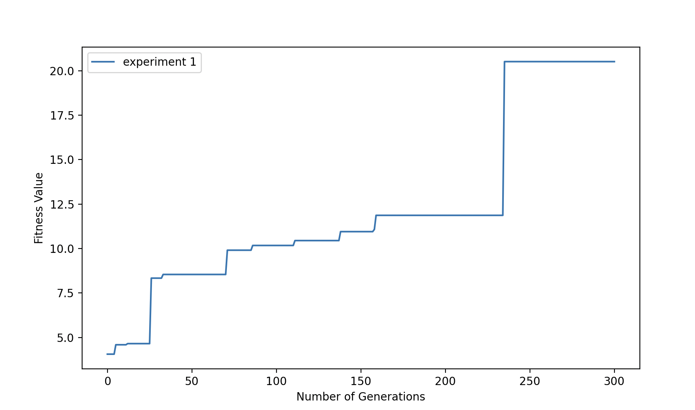
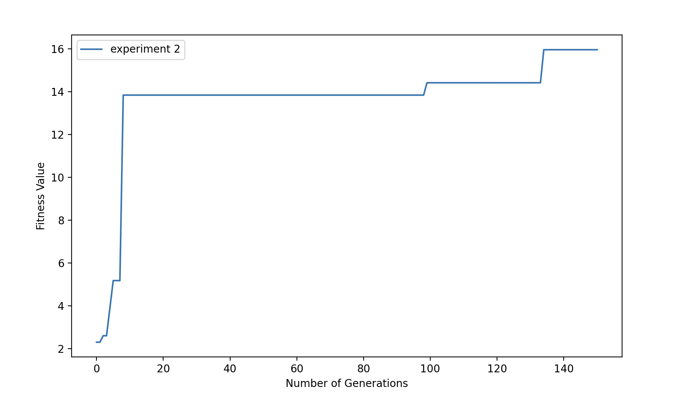
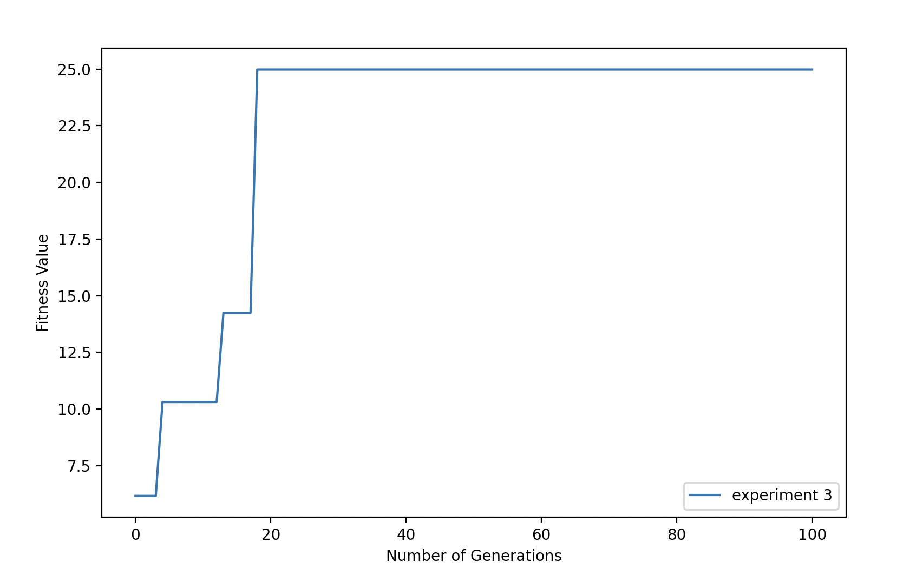

Running the program:
- Navigate to GitHub Desktop or download a zip of the files in the branch final1
- Open the zipped file or navigate to the folder directed (catherg/mybots) on your terminal
- Confirm you are in a branch called "final1" on your terminal
- Run the program with the command: "python3 search.py"
Notes about analyzing the simulation:
The best performing body and brain is saved in this repository as experiment1_body(givenID).urdf, experiment1_brain(givenID).nndf, etc.
If needed, run the best performing body in each experiment using these files (delete the "experiment1_" tag in the name before you run it) - These files can be run in solution and parallelhillclimber, specifically in line 16 of of parallelHillClimber.py, change the self.nextAvailableID to the ID number given in these files and change self.parents[i] to self.parents[0]. - Then in line 67 of of parallelHillClimber.py put self.parents[0] instead of self.parents[highest]
Note about running the program: If there are issues with the fitness value being read, run it again and it should be read fine (this error occurs sometimes when running a large number of generations)
Conclusion:
It ultimately seems that after running my experiment my initial thoughts and hypotheses were proven right, the size of a creature impacts its movement a lot, usually making it worse. Although I didn't anticipate the experiment 3 robot to have the best fitness values, especially only after 100 generations. I also didn't anticipate the experiment 1 robot to grow arms and have the most symmetry among all of the robots.
I would further explore the symmetry in these robots if I had more time, and I would analyze if the experiment 3 robot always produces the best fitness values. Another thing I would do if I had more time is to not make time a constant in these experiments, but rather run all of these experiments for 500+ generations, and vary population size to see if there is any difference in the behavior.
Experimentation
The task of the creature is to march to the beat, meaning that they will be walking with small wiggles and jumps in between steps. As the generations continue, the creature will randomly mutate by adding random cube to any axis, and the brain then adding a sensor neuron.
I will be conducting three experiments and determining under which experiment the creature performs the best in. The first experiment contains a population size of 10 and a total of 300 generations, in the first experiment the creature cannot spawn more than 15 cubes. The second experiment contains a population size of 10 and a total of 150 generations, and in this experiment the creature cannot spawn more than 20 cubes. The last experiment contains a population size of 10 over 100 generations, and in this experiment the creature can spawn as many cubes as it is able to.
After calculating the time it takes to produce one simulation(~30 seconds), it wasn't plausible for me to produce 50,000 simulations, so instead of doing a total of 500 generations over 10 seeds I made the constant of each experiment time. After experimenting with the time needed to run each simulation for the different experiments, I chose to have each experiment take 8 hours to run. Another constant in these experiments is the population size, which always stays at 10. Since I will only be doing three experiments I used 3 seeds, one for each experiment.
I tested these experiments by making the body mutate (look at "Body and Brain Mutation" Section, line 75) randomly every generation. The control experiment in this case was experiment 1, which restricted the robot to have 15 joints. I did this by inserting this piece of code:
These two lines made it so that if the robot was at the largest size possible, it would completely skip over the mutation of the body and not change anything. I made this into my control experiment because I isolated the variable of interest which was the number of cubes.
The inspiration for this experiment came from a question I had about how robots of different sizes could complete certain tasks, and what the optimal size and mutation for the body would be to complete a simple task like walking or "marching to the beat".
Experiment Diagram:
Credit for the diagram goes to Karl Sims
Randomization, Sensors, and Fitness Function:
The fitness function uses the random parent weights produced, and makes a replication of the random weights produced and mutates these weights in the children array. These child weights are then compared with the parent weights to produce an optimal result, which is the largest value.
The colors were chosen based on the function rand.randint. This function was called to either produce a 1 or 0 when every cube was created in the function create_body. If the number turned out to be a 1, then the cube would be green, and if the number turned out to be 0, the cube would be blue.
The random sensor placement was also done by the function rand.randint, correlated to how the colors were chosen as well. If the random number was 1 then the cube would have a sensor neuron, otherwise there would be no sensor neuron in that cube.
Creation of the Body:
I chose to completely randomize the creation of the body. I chose for the first cube always be positioned at 0,0 on the x and y axis. I also randomized the placement of all the other cubes so that they could be on either the x, y, and z axis. I always placed the joint in the middle of the cube, but when placing a new joint I took a random joint from the preexisting ones to work off.

Credit for the diagram goes to Karl Sims
Creation of the Brain:

Credit for the diagram goes to Karl Sims
Body and Brain Mutation:
The body mutates by by taking a random number of 0 or 1, and if the number turns out to be 1 then the body adds another completely randomized cube that contains a sensor neuron at a random axis onto the body.

Credit for the diagram goes to Karl Sims
Since these mutations are random, the offspring produced from the parents are also very random. These offspring would stay either exactly the same as the parent or the body and brain would be larger than the parents. The body could only be one cube larger than the parent and the brain would then only have one more row of sensor neurons and one more row of motor neurons. The offspring of a parents could only change by this much, but overtime the final offspring could end up growing much larger in size and having a much bigger brain than the original parent.
Morphospace:
The movements that seem to be possible with this creature are primarily just wiggles. These wiggles seem to be more prominent when the creature develops arms. It seems like the more sensor neurons are concentrated in an area, the more movement that area has.
There are many brains which are possible based on the cubes that become sensor neurons. The brain and synpases are based off of the amount of sensor neurons the random function decides to generate. There could be a type of brain where everything has a synapse and can faciliate movement, and there can also be a type of brain with no synpases or movement. With what I have observed, it seems that there is a sensor that can affect a motor on the other side of the body, a sensor can definitly impact different parts of the body but the impact depends on the sizing of the cubes.
Process of Selection:

Credit for the diagram goes to Karl Sims
The process of selection is started by a random array of weights produced in the parent solution, and then these weights are made into a copy which is put into the children solution. Then these weights in the children solution are randomly mutated. After the mutation, these children weights are compared to the parent weights. The ultimate goal of this process of seleciton is to find the largest possible fitness value. This means that when these weights are compared, the largest weight produced is replaced into the parent array. Then after all the generations are run, the largest weight out of the final parent array is used to make the final simulation.
Optimization Results/Observed Behavior:
The optimization results were that the creature moved and wiggled more. With the wiggling and the small jumps, the creature was able to travel further back compared to when it was completely randomized.
Fitness Curves:
Experiment 1 Fitness Curve:
This curve shows the results of the first experiment, where the number of joints was restricted to 15, meaning the creature could not be comprised of over 16 cubes. This experiment was run for 300 generations and the best fitness value of each generation was plotted.

Experiment 2 Fitness Curve:
This curve shows the results of the second experiment, where the number of joints was restricted to 20, meaning the creature could not be comprised of over 21 cubes. This experiment was run for 150 generations and the best fitness value of each generation was plotted.

Experiment 3 Fitness Curve:
This curve shows the results of the third experiment, where there was no restrictions on the number of cuves or joints that the creature could possess. This experiment was run for 100 generations and the best fitness value of each generation was plotted.

Final Results:
From analyzing the behavior of the robots produced from these 3 experiments, it seems that my initial hypothesis was correct. The most restricted robot, where there could have only been 15 joints, performed the best while the least restricted robot performed the worst. The least restricted robot barely moved after 100 generations, while the most restricted robot wiggled a substantial amount and moved away from its original starting point.
As expected, the bodies and brains changed the most in experiment 3. This is because the bodies and brains were restricted in experiments 1 and 2 to the point where they could only expand by so much. Although the bodies and brains in experiment 3 were the largest, the behavior of the robot turned out to be the least effective. All the lineages in this robot are pretty similar, with small changes in the robot happening every few generations, the experiment 1 and experiment 2 lineages stopped early on since there were restriction.
Evolution in these robots did get stuck every few generations mainly because the body only mutates randomly, and also because once a high fitness value is reached, it is very hard to overpass it. The evolution mainly got stuck toward the end of experiments 1 and 2 because the robot wasn't able to get any bigger. I don't think there was anything that lowered the likelihood of beneficial mutations except for the restrictions I put on the robot for experiments 1 and 2.
Digging Deeper:
After digging further into the results, it seems that the most restricted robot (experiment 1), actually has the most symmetry among the three experiments. The experiment 1 robot seemed to produce 2 arms, which helped with its task of marching to the beat, while the robots from experiment 2 and 3 stayed as lumps of cubes.
From analyzing the fitness curves, it seems that the least restricted robot actually performed the best. The final fitness value of the least restricted robot (experiment 3) was around 25, while experiment 2 was around 16, and experiment 1 was around 21.
Although I believe these results are telling, I think it is important to note that since my constant was time, I ran the most restricted robot for many more generations than my other robots. This could have been a contributing factor as to why the most restricted robot performed the best.